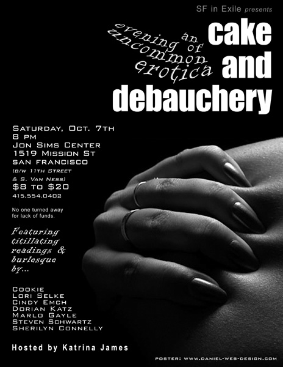

Events |
7pm doors, 7:30 show ~~~~~~~~~~~~~~~~~~~~~~~~~~~~~~
To subscribe to the SFinX announcement list: send a blank e-mail to SFinExile_announce-subscribe@yahoogroups.com

THE BEST OF SAN FRANCISCO IN EXILE: Past, Present, and Future
Saturday, June 7th, 2008
Joe's Garage, 975 Howard Street, San Francisco
$10-20 sliding scale, nobody turned away
Started in 2001 by queer arts visionaries Kris Kovick and Sara Moore,
San Francisco in Exile is a longstanding cornerstone of San Franciscan
queer and outsider culture -- promoting new and emerging queer artists
alongside queer arts Most Valuable Players.
Join:
MELIZA BANALES
SHERILYN CONNELLY
JEN CROSS
GINA DE VRIES
CINDY EMCH
LOGAN KNIGHT
LEAH LAKSHMI PIEPZNA-SAMARASINHA
ROBERT LAWRENCE
ZULEIKA MAHMOOD
HOREHOUND STILLPOINT
... as they read fabulous new stuff and tell tales of Ye Olde SFinX days.
Curated by Gina de Vries.

Jon Sims Center for the Arts and SF in eXile* proudly present:
~~~~~~~~~~~~~~~~~~~~~~~~~~~~~
~ ~ ~ CAKE & DEBAUCHERY ~ ~ ~
~~~~~~~~~~~~~~~~~~~~~~~~~~~~~
cake: [keyk] n. A tasty dessert often found at birthday celebrations.
debauchery: [di-baw-chuh-ree] n. Excessive indulgence in sensual
pleasures. Best when combined with cake.
Cake & Debauchery: An evening of uncommon erotica.
Featuring titillating readings and burlesque by
Cookie
Cindy Emch
Dorian Katz
Marlo Gayle
Steven Schwartz
Sherilyn Connelly
Hosted by
Katrina James
Sat. Oct 7th, 2006, 8 pm
Jon Sims Center for the Arts
1519 Mission @ 11th St. / Van Ness, SF
$8 - $20 s.s. no one turned away
For reservations / wheelchair access call
415-554-0402
Remember to bring $$ for refreshments.
* SFinX: San Francisco in Exile Live at the JSC This event will be
digitally audio recorded for the SFinX web-based queer artists'
archive. SFinX is dedicated to the documentation and dissemination of
SF's queer performing arts scene through digital media. More info
www.jonsimsctr.org
{% include home.txt %}